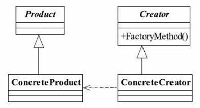
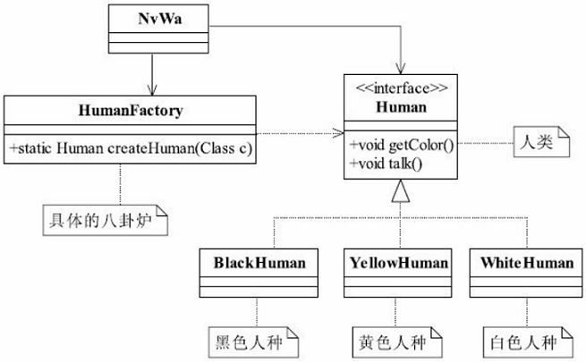
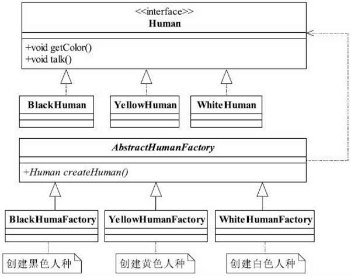

<!DOCTYPE html>
<html lang="en">
<head><meta name="generator" content="Hexo 3.8.0">
    <meta charset="utf-8">
    
    <title>
        工厂模式 |
        
        YingLong</title>
    
    
        <meta name="keywords" content="设计模式,工厂模式">
    
    <meta name="viewport" content="width=device-width, initial-scale=1, maximum-scale=1">
    <meta name="description" content="工厂方法模式工厂方法模式使用的频率非常高 ，用于创建对象的接口， 让子类决定实例化哪一个类。 工厂方法使一个类的实例化延迟到其子类 。用于封装和管理对象的创建，是一种创建模式。是典型的解耦框架，在需要灵活的、可扩展的框架时可以采用，可以用在异构项目中，可以使用在测试驱动的开发框架下。  抽象产品类，抽象人种类： 12345public interface Human &amp;#123;    void">
<meta name="keywords" content="设计模式,工厂模式">
<meta property="og:type" content="article">
<meta property="og:title" content="工厂模式">
<meta property="og:url" content="https://yaoyinglong.github.io/Blog/设计模式/创建型模式/工厂模式/index.html">
<meta property="og:site_name" content="YingLong">
<meta property="og:description" content="工厂方法模式工厂方法模式使用的频率非常高 ，用于创建对象的接口， 让子类决定实例化哪一个类。 工厂方法使一个类的实例化延迟到其子类 。用于封装和管理对象的创建，是一种创建模式。是典型的解耦框架，在需要灵活的、可扩展的框架时可以采用，可以用在异构项目中，可以使用在测试驱动的开发框架下。  抽象产品类，抽象人种类： 12345public interface Human &amp;#123;    void">
<meta property="og:locale" content="en">
<meta property="og:image" content="https://yaoyinglong.github.io/images/设计模式/工厂方法模式类图.png">
<meta property="og:image" content="https://yaoyinglong.github.io/images/设计模式/简单工厂模式类图.png">
<meta property="og:image" content="https://yaoyinglong.github.io/images/设计模式/多个工厂类类图.png">
<meta property="og:image" content="https://yaoyinglong.github.io/images/%E8%AE%BE%E8%AE%A1%E6%A8%A1%E5%BC%8F/%E6%8A%BD%E8%B1%A1%E5%B7%A5%E5%8E%82%E6%A8%A1%E5%BC%8F%E7%B1%BB%E5%9B%BE.png">
<meta property="og:updated_time" content="2021-06-30T01:36:58.189Z">
<meta name="twitter:card" content="summary">
<meta name="twitter:title" content="工厂模式">
<meta name="twitter:description" content="工厂方法模式工厂方法模式使用的频率非常高 ，用于创建对象的接口， 让子类决定实例化哪一个类。 工厂方法使一个类的实例化延迟到其子类 。用于封装和管理对象的创建，是一种创建模式。是典型的解耦框架，在需要灵活的、可扩展的框架时可以采用，可以用在异构项目中，可以使用在测试驱动的开发框架下。  抽象产品类，抽象人种类： 12345public interface Human &amp;#123;    void">
<meta name="twitter:image" content="https://yaoyinglong.github.io/images/设计模式/工厂方法模式类图.png">
    

    

    
        <link rel="icon" href="/favicon.ico">
    

    <link rel="stylesheet" href="/libs/font-awesome/css/font-awesome.min.css">
    <link rel="stylesheet" href="/libs/open-sans/styles.css">
    <link rel="stylesheet" href="/libs/source-code-pro/styles.css">

    <link rel="stylesheet" href="/css/style.css">
    <script src="/libs/jquery/2.1.3/jquery.min.js"></script>
    <script src="/libs/jquery/plugins/cookie/1.4.1/jquery.cookie.js"></script>
    
    
        <link rel="stylesheet" href="/libs/lightgallery/css/lightgallery.min.css">
    
    
        <link rel="stylesheet" href="/libs/justified-gallery/justifiedGallery.min.css">
    
    
    
    


</head>
</html>
<body>
<div id="container">
    <header id="header">
    <div id="header-main" class="header-inner">
        <div class="outer">
            <a href="/" id="logo">
                <i class="logo"></i>
                <span class="site-title">YingLong</span>
            </a>
            <nav id="main-nav">
                
                    <a class="main-nav-link" href="/">Home</a>
                
                    <a class="main-nav-link" href="/archives">Archives</a>
                
                    <a class="main-nav-link" href="/categories">Categories</a>
                
                    <a class="main-nav-link" href="/tags">Tags</a>
                
                    <a class="main-nav-link" href="/about">About</a>
                
            </nav>
            
            <div id="search-form-wrap">
    
        <form class="search-form">
            <input type="text" class="ins-search-input search-form-input" placeholder="Search">
            <button type="submit" class="search-form-submit"></button>
        </form>
        <div class="ins-search">
    <div class="ins-search-mask"></div>
    <div class="ins-search-container">
        <div class="ins-input-wrapper">
            <input type="text" class="ins-search-input" placeholder="Type something...">
            <span class="ins-close ins-selectable"><i class="fa fa-times-circle"></i></span>
        </div>
        <div class="ins-section-wrapper">
            <div class="ins-section-container"></div>
        </div>
    </div>
</div>
<script>
    (function (window) {
        var INSIGHT_CONFIG = {
            TRANSLATION: {
                POSTS: 'Posts',
                PAGES: 'Pages',
                CATEGORIES: 'Categories',
                TAGS: 'Tags',
                UNTITLED: '(Untitled)',
            },
            ROOT_URL: '/',
            CONTENT_URL: '/content.json',
        };
        window.INSIGHT_CONFIG = INSIGHT_CONFIG;
    })(window);
</script>
<script src="/js/insight.js"></script>
    
</div>
        </div>
    </div>
    <div id="main-nav-mobile" class="header-sub header-inner">
        <table class="menu outer">
            <tr>
                
                    <td><a class="main-nav-link" href="/">Home</a></td>
                
                    <td><a class="main-nav-link" href="/archives">Archives</a></td>
                
                    <td><a class="main-nav-link" href="/categories">Categories</a></td>
                
                    <td><a class="main-nav-link" href="/tags">Tags</a></td>
                
                    <td><a class="main-nav-link" href="/about">About</a></td>
                
                <td>
                    
    <div class="search-form">
        <input type="text" class="ins-search-input search-form-input" placeholder="Search">
    </div>

                </td>
            </tr>
        </table>
    </div>
</header>

    <div class="outer">
        
        
            <aside id="sidebar">
    
        
    <div class="widget-wrap" id="categories">
        <h3 class="widget-title">
            <span>categories</span>
            &nbsp;
            <a id="allExpand" href="#">
                <i class="fa fa-angle-double-down fa-2x"></i>
            </a>
        </h3>

        
        
        
            <ul class="unstyled" id="tree">
                
                    <li class="directory">
                        <a href="#" data-role="directory">
                            <i class="fa fa-folder"></i>
                            &nbsp;
                            DB
                        </a>
                        
            <ul class="unstyled" id="tree">
                
                    <li class="file"><a href="/Blog/DB/MySQL基础/">MySQL基础</a></li>
                
                    <li class="file"><a href="/Blog/DB/MySQL常用SQL总结/">MySQL常用SQL总结</a></li>
                
                    <li class="file"><a href="/Blog/DB/分库分表/">分库分表</a></li>
                
            </ul>
        
                    </li>
                
                    <li class="directory">
                        <a href="#" data-role="directory">
                            <i class="fa fa-folder"></i>
                            &nbsp;
                            Git
                        </a>
                        
            <ul class="unstyled" id="tree">
                
                    <li class="file"><a href="/Blog/Git/GIt基本概念/">Git基本概念</a></li>
                
                    <li class="file"><a href="/Blog/Git/GIt常用命令/">Git常用命令</a></li>
                
                    <li class="file"><a href="/Blog/Git/分支管理理解/">分支管理理解</a></li>
                
            </ul>
        
                    </li>
                
                    <li class="directory">
                        <a href="#" data-role="directory">
                            <i class="fa fa-folder"></i>
                            &nbsp;
                            Go
                        </a>
                        
            <ul class="unstyled" id="tree">
                
                    <li class="file"><a href="/Blog/Go/Go基础/">Go基础</a></li>
                
            </ul>
        
                    </li>
                
                    <li class="directory">
                        <a href="#" data-role="directory">
                            <i class="fa fa-folder"></i>
                            &nbsp;
                            Java
                        </a>
                        
            <ul class="unstyled" id="tree">
                
                    <li class="directory">
                        <a href="#" data-role="directory">
                            <i class="fa fa-folder"></i>
                            &nbsp;
                            VM
                        </a>
                        
            <ul class="unstyled" id="tree">
                
                    <li class="file"><a href="/Blog/Java/VM/HotSpot收集算法实现/">HotSpot收集算法实现</a></li>
                
                    <li class="file"><a href="/Blog/Java/VM/JVM内存池/">JVM内存池</a></li>
                
                    <li class="file"><a href="/Blog/Java/VM/内存非配与回收策略/">内存分配与回收策略</a></li>
                
                    <li class="file"><a href="/Blog/Java/VM/Java内存区域/">Java内存区域</a></li>
                
                    <li class="file"><a href="/Blog/Java/VM/Minor&Major&Full GC/">Minor&Major&Full GC</a></li>
                
                    <li class="file"><a href="/Blog/Java/VM/OutOfMemoryError异常/">OOM异常实验</a></li>
                
                    <li class="file"><a href="/Blog/Java/VM/垃圾收集算法/">垃圾收集算法</a></li>
                
                    <li class="file"><a href="/Blog/Java/VM/堆中对象分配&布局&访问/">堆中对象分配&布局&访问</a></li>
                
                    <li class="file"><a href="/Blog/Java/VM/对象是否存活/">对象是否存活</a></li>
                
                    <li class="file"><a href="/Blog/Java/VM/类加载的时机/">类加载的时机</a></li>
                
                    <li class="file"><a href="/Blog/Java/VM/运行时栈帧结构/">运行时栈帧结构</a></li>
                
                    <li class="file"><a href="/Blog/Java/VM/垃圾收集器/">垃圾收集器</a></li>
                
                    <li class="file"><a href="/Blog/Java/VM/方法调用/">方法调用</a></li>
                
                    <li class="file"><a href="/Blog/Java/VM/字节码指令/">字节码指令</a></li>
                
                    <li class="file"><a href="/Blog/Java/VM/理解GC日志/">理解GC日志</a></li>
                
                    <li class="file"><a href="/Blog/Java/VM/类加载器/">类加载器</a></li>
                
                    <li class="file"><a href="/Blog/Java/VM/Class文件结构/">Class文件结构</a></li>
                
                    <li class="file"><a href="/Blog/Java/VM/属性表集合/">属性表集合</a></li>
                
                    <li class="file"><a href="/Blog/Java/VM/类加载过程/">类加载过程</a></li>
                
            </ul>
        
                    </li>
                
                    <li class="directory">
                        <a href="#" data-role="directory">
                            <i class="fa fa-folder"></i>
                            &nbsp;
                            基础
                        </a>
                        
            <ul class="unstyled" id="tree">
                
                    <li class="file"><a href="/Blog/Java/基础/lambda常用总结/">lambda常用总结</a></li>
                
                    <li class="file"><a href="/Blog/Java/基础/时间及日期总结/">Java8时间及日期</a></li>
                
                    <li class="file"><a href="/Blog/Java/基础/位运算/">位运算</a></li>
                
                    <li class="file"><a href="/Blog/Java/基础/注解实现及应用/">注解实现及应用</a></li>
                
                    <li class="file"><a href="/Blog/Java/基础/HashMap源码分析JDK8/">HashMap源码分析JDK8</a></li>
                
                    <li class="file"><a href="/Blog/Java/基础/HashMap源码分析JDK7/">HashMap源码分析JDK7</a></li>
                
                    <li class="file"><a href="/Blog/Java/基础/反射基础/">反射基础</a></li>
                
                    <li class="file"><a href="/Blog/Java/基础/动态代理/">动态代理</a></li>
                
                    <li class="file"><a href="/Blog/Java/基础/Java实用工具库/">Java实用工具库</a></li>
                
            </ul>
        
                    </li>
                
                    <li class="directory">
                        <a href="#" data-role="directory">
                            <i class="fa fa-folder"></i>
                            &nbsp;
                            工具
                        </a>
                        
            <ul class="unstyled" id="tree">
                
                    <li class="file"><a href="/Blog/Java/工具/Java中调用Groovy脚本/">Java中调用Groovy脚本</a></li>
                
                    <li class="file"><a href="/Blog/Java/工具/国密SM2/">国密SM2</a></li>
                
                    <li class="file"><a href="/Blog/Java/工具/国密SM4/">国密SM4</a></li>
                
            </ul>
        
                    </li>
                
                    <li class="directory">
                        <a href="#" data-role="directory">
                            <i class="fa fa-folder"></i>
                            &nbsp;
                            并发
                        </a>
                        
            <ul class="unstyled" id="tree">
                
                    <li class="file"><a href="/Blog/Java/并发/原子性、可见性、有序性/">原子性、可见性、有序性</a></li>
                
                    <li class="file"><a href="/Blog/Java/并发/Synchronized总结/">Synchronized总结</a></li>
                
                    <li class="file"><a href="/Blog/Java/并发/线程安全/">线程安全</a></li>
                
                    <li class="file"><a href="/Blog/Java/并发/线程安全实现方式/">线程安全实现方式</a></li>
                
                    <li class="file"><a href="/Blog/Java/并发/ThreadLocal原理/">ThreadLocal原理</a></li>
                
                    <li class="file"><a href="/Blog/Java/并发/Volatile原理/">Volatile原理</a></li>
                
                    <li class="file"><a href="/Blog/Java/并发/Java与线程/">Java与线程</a></li>
                
                    <li class="file"><a href="/Blog/Java/并发/锁优化/">锁优化</a></li>
                
                    <li class="file"><a href="/Blog/Java/并发/Java内存模型与线程/">Java内存模型</a></li>
                
            </ul>
        
                    </li>
                
                    <li class="file"><a href="/Blog/Java/JVM整体概览/">JVM整体概览</a></li>
                
            </ul>
        
                    </li>
                
                    <li class="directory">
                        <a href="#" data-role="directory">
                            <i class="fa fa-folder"></i>
                            &nbsp;
                            Linux
                        </a>
                        
            <ul class="unstyled" id="tree">
                
                    <li class="file"><a href="/Blog/Linux/Linux常用命令/">Linux常用命令</a></li>
                
                    <li class="file"><a href="/Blog/Linux/Linux常用技巧/">Linux常用技巧</a></li>
                
            </ul>
        
                    </li>
                
                    <li class="directory">
                        <a href="#" data-role="directory">
                            <i class="fa fa-folder"></i>
                            &nbsp;
                            Maven
                        </a>
                        
            <ul class="unstyled" id="tree">
                
                    <li class="file"><a href="/Blog/Maven/Maven加密JAR包/">Maven加密JAR包</a></li>
                
                    <li class="file"><a href="/Blog/Maven/Maven基础/">Maven基础</a></li>
                
                    <li class="file"><a href="/Blog/Maven/Maven常用/">Maven常用</a></li>
                
                    <li class="file"><a href="/Blog/Maven/Maven属性/">Maven属性</a></li>
                
                    <li class="file"><a href="/Blog/Maven/Maven常用工具/">Maven常用工具</a></li>
                
                    <li class="file"><a href="/Blog/Maven/Maven插件编写/">Maven插件编写</a></li>
                
                    <li class="file"><a href="/Blog/Maven/Maven生命周期/">Maven生命周期</a></li>
                
                    <li class="file"><a href="/Blog/Maven/Maven个性化打包/">Maven个性化打包</a></li>
                
                    <li class="file"><a href="/Blog/Maven/Maven仓库/">Maven仓库</a></li>
                
                    <li class="file"><a href="/Blog/Maven/Maven插件基础/">Maven插件基础</a></li>
                
                    <li class="file"><a href="/Blog/Maven/Maven聚合与继承/">Maven聚合与继承</a></li>
                
                    <li class="file"><a href="/Blog/Maven/Maven常用插件/">Maven常用插件</a></li>
                
                    <li class="file"><a href="/Blog/Maven/Maven标签全解/">Maven标签全解</a></li>
                
                    <li class="file"><a href="/Blog/Maven/Maven Assembly标签全解/">Maven Assembly标签全解</a></li>
                
            </ul>
        
                    </li>
                
                    <li class="directory">
                        <a href="#" data-role="directory">
                            <i class="fa fa-folder"></i>
                            &nbsp;
                            Python
                        </a>
                        
            <ul class="unstyled" id="tree">
                
                    <li class="file"><a href="/Blog/Python/Excel文件数据抽取/">Excel文件数据抽取</a></li>
                
            </ul>
        
                    </li>
                
                    <li class="directory">
                        <a href="#" data-role="directory">
                            <i class="fa fa-folder"></i>
                            &nbsp;
                            Test
                        </a>
                        
            <ul class="unstyled" id="tree">
                
                    <li class="file"><a href="/Blog/Test/IT测试总结/">IT测试总结</a></li>
                
                    <li class="file"><a href="/Blog/Test/JMeter日常总结/">JMeter日常总结</a></li>
                
                    <li class="file"><a href="/Blog/Test/LoadRunner日常总结/">LoadRunner日常总结</a></li>
                
                    <li class="file"><a href="/Blog/Test/UT测试总结/">UT测试总结</a></li>
                
            </ul>
        
                    </li>
                
                    <li class="directory">
                        <a href="#" data-role="directory">
                            <i class="fa fa-folder"></i>
                            &nbsp;
                            中间件
                        </a>
                        
            <ul class="unstyled" id="tree">
                
                    <li class="directory">
                        <a href="#" data-role="directory">
                            <i class="fa fa-folder"></i>
                            &nbsp;
                            Spring
                        </a>
                        
            <ul class="unstyled" id="tree">
                
                    <li class="file"><a href="/Blog/中间件/Spring/IoC容器/">IoC容器</a></li>
                
                    <li class="file"><a href="/Blog/中间件/Spring/Spring Gzip压缩/">Spring Gzip压缩</a></li>
                
                    <li class="file"><a href="/Blog/中间件/Spring/Spring整体架构/">Spring整体架构</a></li>
                
                    <li class="file"><a href="/Blog/中间件/Spring/Spring线程池跨线程数据共享/">Spring线程池跨线程数据共享</a></li>
                
                    <li class="file"><a href="/Blog/中间件/Spring/Spring知识点/">Spring知识点</a></li>
                
                    <li class="file"><a href="/Blog/中间件/Spring/SpringMvc异步/">SpringMvc异步原理及实现</a></li>
                
                    <li class="file"><a href="/Blog/中间件/Spring/Hystrix总结/">Hystrix总结</a></li>
                
                    <li class="file"><a href="/Blog/中间件/Spring/Spring初始化扩展/">Spring初始化扩展</a></li>
                
            </ul>
        
                    </li>
                
                    <li class="directory">
                        <a href="#" data-role="directory">
                            <i class="fa fa-folder"></i>
                            &nbsp;
                            常见问题
                        </a>
                        
            <ul class="unstyled" id="tree">
                
                    <li class="file"><a href="/Blog/中间件/常见问题/HBase依赖冲突/">HBase依赖冲突</a></li>
                
                    <li class="file"><a href="/Blog/中间件/常见问题/Maven编译后文件损坏/">Maven编译后文件损坏</a></li>
                
            </ul>
        
                    </li>
                
                    <li class="file"><a href="/Blog/中间件/Redis分布式锁实现/">Redis分布式锁实现</a></li>
                
                    <li class="file"><a href="/Blog/中间件/Redis总结/">Redis总结</a></li>
                
                    <li class="file"><a href="/Blog/中间件/Tomcat工作原理/">Tomcat工作原理</a></li>
                
            </ul>
        
                    </li>
                
                    <li class="directory">
                        <a href="#" data-role="directory">
                            <i class="fa fa-folder"></i>
                            &nbsp;
                            协议族
                        </a>
                        
            <ul class="unstyled" id="tree">
                
                    <li class="file"><a href="/Blog/协议族/TCPIP四层&五层模型/">TCP/IP四层&五层模型</a></li>
                
                    <li class="file"><a href="/Blog/协议族/网络基础知识/">网络基础知识</a></li>
                
                    <li class="file"><a href="/Blog/协议族/以太网/">以太网</a></li>
                
                    <li class="file"><a href="/Blog/协议族/地址解析协议/">地址解析协议ARP</a></li>
                
            </ul>
        
                    </li>
                
                    <li class="directory">
                        <a href="#" data-role="directory">
                            <i class="fa fa-folder"></i>
                            &nbsp;
                            杂记
                        </a>
                        
            <ul class="unstyled" id="tree">
                
                    <li class="file"><a href="/Blog/杂记/IDEA实用插件/">IDEA实用插件</a></li>
                
                    <li class="file"><a href="/Blog/杂记/JAVA实用工具/">JAVA实用工具</a></li>
                
                    <li class="file"><a href="/Blog/杂记/IDEA快捷的使用/">IDEA的快捷使用</a></li>
                
                    <li class="file"><a href="/Blog/杂记/Win实用工具/">Win实用工具</a></li>
                
                    <li class="file"><a href="/Blog/杂记/XSD使用总结/">XSD实用总结</a></li>
                
                    <li class="file"><a href="/Blog/杂记/SonarQube配置总结/">SonarQube配置总结</a></li>
                
            </ul>
        
                    </li>
                
                    <li class="directory">
                        <a href="#" data-role="directory">
                            <i class="fa fa-folder"></i>
                            &nbsp;
                            算法
                        </a>
                        
            <ul class="unstyled" id="tree">
                
                    <li class="file"><a href="/Blog/算法/二叉搜索树/">二叉搜索树</a></li>
                
                    <li class="file"><a href="/Blog/算法/平衡二叉树/">平衡二叉树</a></li>
                
                    <li class="file"><a href="/Blog/算法/树基础/">树基础</a></li>
                
                    <li class="file"><a href="/Blog/算法/排序算法/">排序算法</a></li>
                
                    <li class="file"><a href="/Blog/算法/图基础/">图基础</a></li>
                
            </ul>
        
                    </li>
                
                    <li class="directory">
                        <a href="#" data-role="directory">
                            <i class="fa fa-folder"></i>
                            &nbsp;
                            自度
                        </a>
                        
            <ul class="unstyled" id="tree">
                
                    <li class="file"><a href="/Blog/自度/隐形眼镜攻略/"></a></li>
                
            </ul>
        
                    </li>
                
                    <li class="directory open">
                        <a href="#" data-role="directory">
                            <i class="fa fa-folder-open"></i>
                            &nbsp;
                            设计模式
                        </a>
                        
            <ul class="unstyled" id="tree">
                
                    <li class="directory open">
                        <a href="#" data-role="directory">
                            <i class="fa fa-folder-open"></i>
                            &nbsp;
                            创建型模式
                        </a>
                        
            <ul class="unstyled" id="tree">
                
                    <li class="file"><a href="/Blog/设计模式/创建型模式/单例模式/">单例模式</a></li>
                
                    <li class="file"><a href="/Blog/设计模式/创建型模式/原型模式/">原型模式</a></li>
                
                    <li class="file"><a href="/Blog/设计模式/创建型模式/建造者模式/">建造者模式</a></li>
                
                    <li class="file active"><a href="/Blog/设计模式/创建型模式/工厂模式/">工厂模式</a></li>
                
            </ul>
        
                    </li>
                
                    <li class="directory">
                        <a href="#" data-role="directory">
                            <i class="fa fa-folder"></i>
                            &nbsp;
                            结构型模式
                        </a>
                        
            <ul class="unstyled" id="tree">
                
                    <li class="file"><a href="/Blog/设计模式/结构型模式/代理模式/">代理模式</a></li>
                
                    <li class="file"><a href="/Blog/设计模式/结构型模式/装饰模式/">装饰模式</a></li>
                
                    <li class="file"><a href="/Blog/设计模式/结构型模式/适配器模式/">适配器模式</a></li>
                
                    <li class="file"><a href="/Blog/设计模式/结构型模式/组合模式/">组合模式</a></li>
                
            </ul>
        
                    </li>
                
                    <li class="directory">
                        <a href="#" data-role="directory">
                            <i class="fa fa-folder"></i>
                            &nbsp;
                            行为型模式
                        </a>
                        
            <ul class="unstyled" id="tree">
                
                    <li class="file"><a href="/Blog/设计模式/行为型模式/模板方法模式/">模板方法模式</a></li>
                
                    <li class="file"><a href="/Blog/设计模式/行为型模式/中介者模式/">中介者模式</a></li>
                
                    <li class="file"><a href="/Blog/设计模式/行为型模式/命令模式/">命令模式</a></li>
                
                    <li class="file"><a href="/Blog/设计模式/行为型模式/责任链模式/">责任链模式</a></li>
                
                    <li class="file"><a href="/Blog/设计模式/行为型模式/策略模式/">策略模式</a></li>
                
                    <li class="file"><a href="/Blog/设计模式/行为型模式/迭代器模式/">迭代器模式</a></li>
                
                    <li class="file"><a href="/Blog/设计模式/行为型模式/观察者模式/">观察者模式</a></li>
                
            </ul>
        
                    </li>
                
                    <li class="file"><a href="/Blog/设计模式/SOLID基本原则/">SOLID基本原则</a></li>
                
                    <li class="file"><a href="/Blog/设计模式/设计模式概览/">设计模式概览</a></li>
                
            </ul>
        
                    </li>
                
                    <li class="file"><a href="/Blog/index/">Welcome YingLong's Blog</a></li>
                
            </ul>
        
    </div>
    <script>
        $(document).ready(function () {
            var iconFolderOpenClass = 'fa-folder-open';
            var iconFolderCloseClass = 'fa-folder';
            var iconAllExpandClass = 'fa-angle-double-down';
            var iconAllPackClass = 'fa-angle-double-up';
            // Handle directory-tree expansion:
            // 左键单独展开目录
            $(document).on('click', '#categories a[data-role="directory"]', function (event) {
                event.preventDefault();

                var icon = $(this).children('.fa');
                var expanded = icon.hasClass(iconFolderOpenClass);
                var subtree = $(this).siblings('ul');
                icon.removeClass(iconFolderOpenClass).removeClass(iconFolderCloseClass);
                if (expanded) {
                    if (typeof subtree != 'undefined') {
                        subtree.slideUp({duration: 100});
                    }
                    icon.addClass(iconFolderCloseClass);
                } else {
                    if (typeof subtree != 'undefined') {
                        subtree.slideDown({duration: 100});
                    }
                    icon.addClass(iconFolderOpenClass);
                }
            });
            // 右键展开下属所有目录
            $('#categories a[data-role="directory"]').bind("contextmenu", function (event) {
                event.preventDefault();

                var icon = $(this).children('.fa');
                var expanded = icon.hasClass(iconFolderOpenClass);
                var listNode = $(this).siblings('ul');
                var subtrees = $.merge(listNode.find('li ul'), listNode);
                var icons = $.merge(listNode.find('.fa'), icon);
                icons.removeClass(iconFolderOpenClass).removeClass(iconFolderCloseClass);
                if (expanded) {
                    subtrees.slideUp({duration: 100});
                    icons.addClass(iconFolderCloseClass);
                } else {
                    subtrees.slideDown({duration: 100});
                    icons.addClass(iconFolderOpenClass);
                }
            })
            // 展开关闭所有目录按钮
            $(document).on('click', '#allExpand', function (event) {
                event.preventDefault();

                var icon = $(this).children('.fa');
                var expanded = icon.hasClass(iconAllExpandClass);
                icon.removeClass(iconAllExpandClass).removeClass(iconAllPackClass);
                if (expanded) {
                    $('#sidebar .fa.fa-folder').removeClass('fa-folder').addClass('fa-folder-open')
                    $('#categories li ul').slideDown({duration: 100});
                    icon.addClass(iconAllPackClass);
                } else {
                    $('#sidebar .fa.fa-folder-open').removeClass('fa-folder-open').addClass('fa-folder')
                    $('#categories li ul').slideUp({duration: 100});
                    icon.addClass(iconAllExpandClass);
                }
            });
        });
    </script>

    
    <div id="toTop" class="fa fa-angle-up"></div>
</aside>
        
        <section id="main"><article id="post-设计模式/创建型模式/工厂模式" class="article article-type-post" itemscope itemprop="blogPost">
    <div class="article-inner">
        
        
            <header class="article-header">
                
                    <div class="article-meta">
                        
    <div class="article-category">
        <i class="fa fa-folder"></i>
        <a class="article-category-link" href="/categories/设计模式/">设计模式</a><i class="fa fa-angle-right"></i><a class="article-category-link" href="/categories/设计模式/创建型模式/">创建型模式</a>
    </div>

                        
    <div class="article-tag">
        <i class="fa fa-tag"></i>
        <a class="tag-link" href="/tags/工厂模式/">工厂模式</a>, <a class="tag-link" href="/tags/设计模式/">设计模式</a>
    </div>

                        
    <div class="article-date">
        <i class="fa fa-calendar"></i>
        <a href="/Blog/设计模式/创建型模式/工厂模式/">
            <time datetime="2020-11-02T16:00:00.000Z" itemprop="datePublished">2020-11-03</time>
        </a>
    </div>


                        
                    </div>
                
                
    
        <h1 class="article-title" itemprop="name">
            工厂模式
        </h1>
    

            </header>
        
        
        <div class="article-entry" itemprop="articleBody">
            
            
                    
            
            
                <h2 id="工厂方法模式"><a href="#工厂方法模式" class="headerlink" title="工厂方法模式"></a>工厂方法模式</h2><p><strong>工厂方法模式</strong>使用的频率非常高 ，用于创建对象的接口， 让<strong>子类</strong>决定实例化哪一个类。 工厂方法使一个<strong>类的实例化延迟到其子类</strong> 。用于<strong>封装</strong>和<strong>管理</strong>对象的创建，是一种<strong>创建模式</strong>。是<strong>典型的解耦框架</strong>，在需要<strong>灵活的</strong>、<strong>可扩展</strong>的框架时可以采用，可以用在<strong>异构项目</strong>中，可以使用在测试驱动的开发框架下。</p>
<p></p>
<p>抽象产品类，抽象人种类：</p>
<figure class="highlight java"><table><tr><td class="gutter"><pre><span class="line">1</span><br><span class="line">2</span><br><span class="line">3</span><br><span class="line">4</span><br><span class="line">5</span><br></pre></td><td class="code"><pre><span class="line"><span class="keyword">public</span> <span class="class"><span class="keyword">interface</span> <span class="title">Human</span> </span>&#123;</span><br><span class="line">    <span class="function"><span class="keyword">void</span> <span class="title">getColor</span><span class="params">()</span></span>;</span><br><span class="line"></span><br><span class="line">    <span class="function"><span class="keyword">void</span> <span class="title">talk</span><span class="params">()</span></span>;</span><br><span class="line">&#125;</span><br></pre></td></tr></table></figure>
<p>具体的产品类可以有多个， 都继承于抽象产品类，具体的人种类：</p>
<figure class="highlight java"><table><tr><td class="gutter"><pre><span class="line">1</span><br><span class="line">2</span><br><span class="line">3</span><br><span class="line">4</span><br><span class="line">5</span><br><span class="line">6</span><br><span class="line">7</span><br><span class="line">8</span><br><span class="line">9</span><br><span class="line">10</span><br><span class="line">11</span><br><span class="line">12</span><br><span class="line">13</span><br><span class="line">14</span><br><span class="line">15</span><br><span class="line">16</span><br><span class="line">17</span><br><span class="line">18</span><br><span class="line">19</span><br><span class="line">20</span><br><span class="line">21</span><br><span class="line">22</span><br><span class="line">23</span><br><span class="line">24</span><br><span class="line">25</span><br><span class="line">26</span><br><span class="line">27</span><br><span class="line">28</span><br><span class="line">29</span><br><span class="line">30</span><br><span class="line">31</span><br><span class="line">32</span><br><span class="line">33</span><br><span class="line">34</span><br><span class="line">35</span><br></pre></td><td class="code"><pre><span class="line"><span class="keyword">public</span> <span class="class"><span class="keyword">class</span> <span class="title">BlackHuman</span> <span class="keyword">implements</span> <span class="title">Human</span> </span>&#123;</span><br><span class="line">    <span class="meta">@Override</span></span><br><span class="line">    <span class="function"><span class="keyword">public</span> <span class="keyword">void</span> <span class="title">getColor</span><span class="params">()</span> </span>&#123;</span><br><span class="line">        System.out.println(<span class="string">"黑色人种"</span>);</span><br><span class="line">    &#125;</span><br><span class="line"></span><br><span class="line">    <span class="meta">@Override</span></span><br><span class="line">    <span class="function"><span class="keyword">public</span> <span class="keyword">void</span> <span class="title">talk</span><span class="params">()</span> </span>&#123;</span><br><span class="line">        System.out.println(<span class="string">"我是黑色人种"</span>);</span><br><span class="line">    &#125;</span><br><span class="line">&#125;</span><br><span class="line"></span><br><span class="line"><span class="keyword">public</span> <span class="class"><span class="keyword">class</span> <span class="title">WhiteHuman</span> <span class="keyword">implements</span> <span class="title">Human</span> </span>&#123;</span><br><span class="line">    <span class="meta">@Override</span></span><br><span class="line">    <span class="function"><span class="keyword">public</span> <span class="keyword">void</span> <span class="title">getColor</span><span class="params">()</span> </span>&#123;</span><br><span class="line">        System.out.println(<span class="string">"白色人种"</span>);</span><br><span class="line">    &#125;</span><br><span class="line"></span><br><span class="line">    <span class="meta">@Override</span></span><br><span class="line">    <span class="function"><span class="keyword">public</span> <span class="keyword">void</span> <span class="title">talk</span><span class="params">()</span> </span>&#123;</span><br><span class="line">        System.out.println(<span class="string">"我是白色人种"</span>);</span><br><span class="line">    &#125;</span><br><span class="line">&#125;</span><br><span class="line"></span><br><span class="line"><span class="keyword">public</span> <span class="class"><span class="keyword">class</span> <span class="title">YellowHuman</span> <span class="keyword">implements</span> <span class="title">Human</span> </span>&#123;</span><br><span class="line">    <span class="meta">@Override</span></span><br><span class="line">    <span class="function"><span class="keyword">public</span> <span class="keyword">void</span> <span class="title">getColor</span><span class="params">()</span> </span>&#123;</span><br><span class="line">        System.out.println(<span class="string">"黄色人种"</span>);</span><br><span class="line">    &#125;</span><br><span class="line"></span><br><span class="line">    <span class="meta">@Override</span></span><br><span class="line">    <span class="function"><span class="keyword">public</span> <span class="keyword">void</span> <span class="title">talk</span><span class="params">()</span> </span>&#123;</span><br><span class="line">        System.out.println(<span class="string">"我是黄色人种"</span>);</span><br><span class="line">    &#125;</span><br><span class="line">&#125;</span><br></pre></td></tr></table></figure>
<p>抽象工厂类负责定义产品对象的产生：</p>
<figure class="highlight java"><table><tr><td class="gutter"><pre><span class="line">1</span><br><span class="line">2</span><br><span class="line">3</span><br></pre></td><td class="code"><pre><span class="line"><span class="keyword">public</span> <span class="keyword">abstract</span> <span class="class"><span class="keyword">class</span> <span class="title">AbstractHumanFactory</span> </span>&#123;</span><br><span class="line">    <span class="keyword">public</span> <span class="keyword">abstract</span> &lt;T extends Human&gt; <span class="function">T <span class="title">createHuman</span><span class="params">(Class&lt;T&gt; clazz)</span></span>;</span><br><span class="line">&#125;</span><br></pre></td></tr></table></figure>
<p>具体如何产生一个产品的对象， 是由具体的工厂类实现的，具体的工厂类：</p>
<figure class="highlight java"><table><tr><td class="gutter"><pre><span class="line">1</span><br><span class="line">2</span><br><span class="line">3</span><br><span class="line">4</span><br><span class="line">5</span><br><span class="line">6</span><br><span class="line">7</span><br><span class="line">8</span><br><span class="line">9</span><br><span class="line">10</span><br><span class="line">11</span><br></pre></td><td class="code"><pre><span class="line"><span class="keyword">public</span> <span class="class"><span class="keyword">class</span> <span class="title">HumanFactory</span> <span class="keyword">extends</span> <span class="title">AbstractHumanFactory</span> </span>&#123;</span><br><span class="line">    <span class="meta">@Override</span></span><br><span class="line">    <span class="keyword">public</span> &lt;T extends Human&gt; <span class="function">T <span class="title">createHuman</span><span class="params">(Class&lt;T&gt; clazz)</span> </span>&#123;</span><br><span class="line">        <span class="keyword">try</span> &#123;</span><br><span class="line">            <span class="keyword">return</span> (T) Class.forName(clazz.getName()).newInstance();</span><br><span class="line">        &#125; <span class="keyword">catch</span> (Exception e) &#123;</span><br><span class="line">            System.out.println(<span class="string">"人种生成错误"</span>);</span><br><span class="line">        &#125;</span><br><span class="line">        <span class="keyword">return</span> <span class="keyword">null</span>;</span><br><span class="line">    &#125;</span><br><span class="line">&#125;</span><br></pre></td></tr></table></figure>
<p>场景类的调用:</p>
<figure class="highlight java"><table><tr><td class="gutter"><pre><span class="line">1</span><br><span class="line">2</span><br><span class="line">3</span><br><span class="line">4</span><br><span class="line">5</span><br><span class="line">6</span><br><span class="line">7</span><br><span class="line">8</span><br><span class="line">9</span><br><span class="line">10</span><br></pre></td><td class="code"><pre><span class="line">AbstractHumanFactory YinYangLu = <span class="keyword">new</span> HumanFactory();</span><br><span class="line">Human whiteHuman = YinYangLu.createHuman(WhiteHuman.class);</span><br><span class="line">whiteHuman.getColor();</span><br><span class="line">whiteHuman.talk();</span><br><span class="line">Human blackHuman = YinYangLu.createHuman(BlackHuman.class);</span><br><span class="line">blackHuman.getColor();</span><br><span class="line">blackHuman.talk();</span><br><span class="line">Human yellowHuman = YinYangLu.createHuman(YellowHuman.class);</span><br><span class="line">yellowHuman.getColor();</span><br><span class="line">yellowHuman.talk();</span><br></pre></td></tr></table></figure>
<h3 id="优点"><a href="#优点" class="headerlink" title="优点"></a>优点</h3><ul>
<li>良好的<strong>封装性</strong>， 代码结构清晰</li>
<li>良好的<strong>扩展性</strong>，增加产品类， 只要适当地修改具体的工厂类或扩展一个工厂类</li>
<li><strong>屏蔽产品类</strong>，产品类的实现如何变化， 调用者都不需要关心，上层模块不发生变化</li>
<li>典型的<strong>解耦框架</strong>，高层模块值需要知道产品的抽象类，符合迪米特法则、依赖倒置原则、里氏替换原则</li>
</ul>
<h3 id="使用场景"><a href="#使用场景" class="headerlink" title="使用场景"></a>使用场景</h3><ul>
<li>需要<strong>生成对象</strong>的地方都可以使用， 但是需要慎重考虑是否要增加一个工厂类进行管理， 增加代码的复杂度</li>
<li>需要<strong>灵活</strong>的、 <strong>可扩展</strong>的框架时</li>
<li><strong>异构项目中</strong>，如通过<code>WebService</code>与一个非Java的项目交互 </li>
<li>可以使用在<strong>测试驱动开发的框架下</strong></li>
</ul>
<h3 id="扩展"><a href="#扩展" class="headerlink" title="扩展"></a>扩展</h3><p>工厂方法模式有很多扩展，且与其他模式结合使用威力更大，可将其<strong>缩小为简单工厂模式</strong>，可<strong>升级为多个工厂类</strong>，可<strong>替代单例模式</strong>，可<strong>延迟初始化</strong>。</p>
<h4 id="缩小为简单工厂模式"><a href="#缩小为简单工厂模式" class="headerlink" title="缩小为简单工厂模式"></a>缩小为简单工厂模式</h4><p>该模式是工厂方法模式的弱化，<strong>简单工厂模式</strong>又叫<strong>静态工厂模式</strong>，仅简单的对<strong>不同类</strong>对象的创建进行了简单的封装。<strong>缺点</strong>是<strong>工厂类的扩展比较困难</strong>， <strong>不符合开闭原则</strong>。 </p>
<p></p>
<p>简单工厂模式相对于工厂方法模式，去掉了<code>AbstractHumanFactory</code>抽象类， 同时把<code>createHuman</code>方法设置为静态类型， 简化了类的创建过程。</p>
<figure class="highlight java"><table><tr><td class="gutter"><pre><span class="line">1</span><br><span class="line">2</span><br><span class="line">3</span><br><span class="line">4</span><br><span class="line">5</span><br><span class="line">6</span><br><span class="line">7</span><br><span class="line">8</span><br><span class="line">9</span><br><span class="line">10</span><br></pre></td><td class="code"><pre><span class="line"><span class="keyword">public</span> <span class="class"><span class="keyword">class</span> <span class="title">HumanFactory</span> </span>&#123;</span><br><span class="line">    <span class="keyword">public</span> <span class="keyword">static</span>  &lt;T extends Human&gt; <span class="function">T <span class="title">createHuman</span><span class="params">(Class&lt;T&gt; clazz)</span> </span>&#123;</span><br><span class="line">        <span class="keyword">try</span> &#123;</span><br><span class="line">            <span class="keyword">return</span> (T) Class.forName(clazz.getName()).newInstance();</span><br><span class="line">        &#125; <span class="keyword">catch</span> (Exception e) &#123;</span><br><span class="line">            System.out.println(<span class="string">"人种生成错误"</span>);</span><br><span class="line">        &#125;</span><br><span class="line">        <span class="keyword">return</span> <span class="keyword">null</span>;</span><br><span class="line">    &#125;</span><br><span class="line">&#125;</span><br></pre></td></tr></table></figure>
<p>场景类的调用:</p>
<figure class="highlight java"><table><tr><td class="gutter"><pre><span class="line">1</span><br><span class="line">2</span><br><span class="line">3</span><br><span class="line">4</span><br><span class="line">5</span><br><span class="line">6</span><br><span class="line">7</span><br><span class="line">8</span><br><span class="line">9</span><br></pre></td><td class="code"><pre><span class="line">Human whiteHuman = HumanFactory.createHuman(WhiteHuman.class);</span><br><span class="line">whiteHuman.getColor();</span><br><span class="line">whiteHuman.talk();</span><br><span class="line">Human blackHuman = HumanFactory.createHuman(BlackHuman.class);</span><br><span class="line">blackHuman.getColor();</span><br><span class="line">blackHuman.talk();</span><br><span class="line">Human yellowHuman = HumanFactory.createHuman(YellowHuman.class);</span><br><span class="line">yellowHuman.getColor();</span><br><span class="line">yellowHuman.talk();</span><br></pre></td></tr></table></figure>
<h4 id="升级为多个工厂类"><a href="#升级为多个工厂类" class="headerlink" title="升级为多个工厂类"></a>升级为多个工厂类</h4><p>在相对比较复杂的项目中，经常遇到初始化一个对象很耗费精力的情况，所有产品类都放到一个工厂方法中进行初始化会使代码结构不清晰。为每个产品定义一个创造者， 然后由调用者自己去选择与哪个工厂方法关联。</p>
<p><strong>多工厂模式</strong>的工厂抽象类，抽象方法中已经<strong>不再需要传递相关参数</strong>了， 因为每一个具体的工厂都已经非常明确自己的职责。但也给<strong>可扩展性</strong>和<strong>可维护性</strong>带来了一定的影响。</p>
<p></p>
<p>多工厂模式的抽象工厂类：</p>
<figure class="highlight java"><table><tr><td class="gutter"><pre><span class="line">1</span><br><span class="line">2</span><br><span class="line">3</span><br></pre></td><td class="code"><pre><span class="line"><span class="keyword">public</span> <span class="keyword">abstract</span> <span class="class"><span class="keyword">class</span> <span class="title">AbstractHumanFactory</span> </span>&#123;</span><br><span class="line">	<span class="function"><span class="keyword">public</span> <span class="keyword">abstract</span> Human <span class="title">createHuman</span><span class="params">()</span></span>;</span><br><span class="line">&#125;</span><br></pre></td></tr></table></figure>
<p>黑色人种的创建工厂实现：</p>
<figure class="highlight java"><table><tr><td class="gutter"><pre><span class="line">1</span><br><span class="line">2</span><br><span class="line">3</span><br><span class="line">4</span><br><span class="line">5</span><br></pre></td><td class="code"><pre><span class="line"><span class="keyword">public</span> <span class="class"><span class="keyword">class</span> <span class="title">BlackHumanFactory</span> <span class="keyword">extends</span> <span class="title">AbstractHumanFactory</span> </span>&#123;</span><br><span class="line">    <span class="function"><span class="keyword">public</span> Human <span class="title">createHuman</span><span class="params">()</span> </span>&#123;</span><br><span class="line">        <span class="keyword">return</span> <span class="keyword">new</span> BlackHuman();</span><br><span class="line">    &#125;</span><br><span class="line">&#125;</span><br></pre></td></tr></table></figure>
<p>黄色人种的创建工厂实现：<br><figure class="highlight java"><table><tr><td class="gutter"><pre><span class="line">1</span><br><span class="line">2</span><br><span class="line">3</span><br><span class="line">4</span><br><span class="line">5</span><br></pre></td><td class="code"><pre><span class="line"><span class="keyword">public</span> <span class="class"><span class="keyword">class</span> <span class="title">YellowHumanFactory</span> <span class="keyword">extends</span> <span class="title">AbstractHumanFactory</span> </span>&#123;</span><br><span class="line">    <span class="function"><span class="keyword">public</span> Human <span class="title">createHuman</span><span class="params">()</span> </span>&#123;</span><br><span class="line">        <span class="keyword">return</span> <span class="keyword">new</span> BlackHuman();</span><br><span class="line">    &#125;</span><br><span class="line">&#125;</span><br></pre></td></tr></table></figure></p>
<p>白色人种的创建工厂实现：<br><figure class="highlight java"><table><tr><td class="gutter"><pre><span class="line">1</span><br><span class="line">2</span><br><span class="line">3</span><br><span class="line">4</span><br><span class="line">5</span><br></pre></td><td class="code"><pre><span class="line"><span class="keyword">public</span> <span class="class"><span class="keyword">class</span> <span class="title">WhiteHumanFactory</span> <span class="keyword">extends</span> <span class="title">AbstractHumanFactory</span> </span>&#123;</span><br><span class="line">    <span class="function"><span class="keyword">public</span> Human <span class="title">createHuman</span><span class="params">()</span> </span>&#123;</span><br><span class="line">        <span class="keyword">return</span> <span class="keyword">new</span> BlackHuman();</span><br><span class="line">    &#125;</span><br><span class="line">&#125;</span><br></pre></td></tr></table></figure></p>
<p>场景类的调用:</p>
<figure class="highlight java"><table><tr><td class="gutter"><pre><span class="line">1</span><br><span class="line">2</span><br><span class="line">3</span><br><span class="line">4</span><br><span class="line">5</span><br><span class="line">6</span><br><span class="line">7</span><br><span class="line">8</span><br><span class="line">9</span><br></pre></td><td class="code"><pre><span class="line">Human whiteHuman = (<span class="keyword">new</span> WhiteHumanFactory()).createHuman();</span><br><span class="line">whiteHuman.getColor();</span><br><span class="line">whiteHuman.talk();</span><br><span class="line">Human blackHuman = (<span class="keyword">new</span> BlackHumanFactory()).createHuman();</span><br><span class="line">blackHuman.getColor();</span><br><span class="line">blackHuman.talk();</span><br><span class="line">Human yellowHuman = (<span class="keyword">new</span> YellowHumanFactory()).createHuman();</span><br><span class="line">yellowHuman.getColor();</span><br><span class="line">yellowHuman.talk();</span><br></pre></td></tr></table></figure>
<p>在复杂的应用中一般采用多工厂的方法， 然后再增加一个协调类， 避免调用者与各个子工厂交流， 协调类的作用是封装子工厂类， 对高层模块提供统一的访问接口。</p>
<h4 id="替代单例模式"><a href="#替代单例模式" class="headerlink" title="替代单例模式"></a>替代单例模式</h4><p>通过获得类构造器， 然后设置访问权限， 生成一个对象， 然后提供外部访问， 保证内存中的对象唯一。 通过工厂方法模式创建了一个单例对象， 该框架可以继续扩展， 在一个项目中可以产生一个<strong>单例构造器</strong>， 所有需要产生单例的类都遵循一定的规则 ， 然后通过扩展该框架。 </p>
<figure class="highlight java"><table><tr><td class="gutter"><pre><span class="line">1</span><br><span class="line">2</span><br><span class="line">3</span><br><span class="line">4</span><br><span class="line">5</span><br><span class="line">6</span><br><span class="line">7</span><br><span class="line">8</span><br><span class="line">9</span><br><span class="line">10</span><br><span class="line">11</span><br><span class="line">12</span><br><span class="line">13</span><br><span class="line">14</span><br><span class="line">15</span><br><span class="line">16</span><br><span class="line">17</span><br><span class="line">18</span><br><span class="line">19</span><br><span class="line">20</span><br><span class="line">21</span><br><span class="line">22</span><br><span class="line">23</span><br><span class="line">24</span><br><span class="line">25</span><br></pre></td><td class="code"><pre><span class="line"><span class="keyword">public</span> <span class="class"><span class="keyword">class</span> <span class="title">Singleton</span> </span>&#123;</span><br><span class="line">    <span class="function"><span class="keyword">private</span> <span class="title">Singleton</span><span class="params">()</span> </span>&#123;&#125;</span><br><span class="line"></span><br><span class="line">    <span class="function"><span class="keyword">public</span> <span class="keyword">void</span> <span class="title">doSomething</span><span class="params">()</span> </span>&#123;&#125;</span><br><span class="line">&#125;</span><br><span class="line"></span><br><span class="line"><span class="keyword">public</span> <span class="class"><span class="keyword">class</span> <span class="title">SingletonFactory</span> </span>&#123;</span><br><span class="line">    <span class="keyword">private</span> <span class="keyword">static</span> Singleton singleton;</span><br><span class="line">    <span class="keyword">static</span>&#123;</span><br><span class="line">        <span class="keyword">try</span> &#123;</span><br><span class="line">            Class cl= Class.forName(Singleton.class.getName());</span><br><span class="line">            <span class="comment">// 获得无参构造</span></span><br><span class="line">            Constructor constructor = cl.getDeclaredConstructor();</span><br><span class="line">            <span class="comment">// 设置无参构造是可访问的</span></span><br><span class="line">            constructor.setAccessible(<span class="keyword">true</span>);</span><br><span class="line">            <span class="comment">// 产生一个实例对象</span></span><br><span class="line">            singleton = (Singleton)constructor.newInstance();</span><br><span class="line">        &#125; <span class="keyword">catch</span> (Exception e) &#123;</span><br><span class="line">            <span class="comment">// 异常处理</span></span><br><span class="line">        &#125;</span><br><span class="line">    &#125;</span><br><span class="line">    <span class="function"><span class="keyword">public</span> <span class="keyword">static</span> Singleton <span class="title">getSingleton</span><span class="params">()</span></span>&#123;</span><br><span class="line">        <span class="keyword">return</span> singleton;</span><br><span class="line">    &#125;</span><br><span class="line">&#125;</span><br></pre></td></tr></table></figure>
<h4 id="延迟初始化"><a href="#延迟初始化" class="headerlink" title="延迟初始化"></a>延迟初始化</h4><p>一个对象被消费完后，并不立即释放，工厂类保持其初始状态，等待再次被调用。</p>
<figure class="highlight java"><table><tr><td class="gutter"><pre><span class="line">1</span><br><span class="line">2</span><br><span class="line">3</span><br><span class="line">4</span><br><span class="line">5</span><br><span class="line">6</span><br><span class="line">7</span><br><span class="line">8</span><br><span class="line">9</span><br><span class="line">10</span><br><span class="line">11</span><br><span class="line">12</span><br><span class="line">13</span><br><span class="line">14</span><br><span class="line">15</span><br><span class="line">16</span><br><span class="line">17</span><br><span class="line">18</span><br><span class="line">19</span><br></pre></td><td class="code"><pre><span class="line"><span class="keyword">public</span> <span class="class"><span class="keyword">class</span> <span class="title">ProductFactory</span> </span>&#123;</span><br><span class="line">    <span class="keyword">private</span> <span class="keyword">static</span> <span class="keyword">final</span> Map&lt;String, Human&gt; humanMap = <span class="keyword">new</span> HashMap&lt;&gt;();</span><br><span class="line">    <span class="function"><span class="keyword">public</span> <span class="keyword">static</span> <span class="keyword">synchronized</span> Human <span class="title">createHuman</span><span class="params">(String type)</span> <span class="keyword">throws</span> Exception </span>&#123;</span><br><span class="line">        Human human;</span><br><span class="line">        <span class="keyword">if</span> (humanMap.containsKey(type)) &#123;</span><br><span class="line">            human = humanMap.get(type);</span><br><span class="line">        &#125; <span class="keyword">else</span> &#123;</span><br><span class="line">            <span class="keyword">if</span> (type.equals(<span class="string">"BlackHuman"</span>)) &#123;</span><br><span class="line">                human = <span class="keyword">new</span> BlackHuman();</span><br><span class="line">            &#125; <span class="keyword">else</span> <span class="keyword">if</span> (type.equals(<span class="string">"WhiteHuman"</span>)) &#123;</span><br><span class="line">                human = <span class="keyword">new</span> WhiteHuman();</span><br><span class="line">            &#125; <span class="keyword">else</span> &#123;</span><br><span class="line">                human = <span class="keyword">new</span> YellowHuman();</span><br><span class="line">            &#125;</span><br><span class="line">            humanMap.put(type, human);</span><br><span class="line">        &#125;</span><br><span class="line">        <span class="keyword">return</span> human;</span><br><span class="line">    &#125;</span><br><span class="line">&#125;</span><br></pre></td></tr></table></figure>
<p>延迟加载框架是可扩展的， 例如限制某一个产品类的最大实例化数量， 可以通过判断Map中已有的对象数量来实现，还可以用在<strong>对象初始化比较复杂</strong>的情况下， 例如<strong>硬件访问</strong>， 涉及多方面的交互， 则可以通过延迟加载降低对象的<strong>产生和销毁</strong>带来的<strong>复杂性</strong>。</p>
<hr>
<h2 id="抽象工厂模式"><a href="#抽象工厂模式" class="headerlink" title="抽象工厂模式"></a>抽象工厂模式</h2><p><strong>抽象工厂模式</strong>是一种比较常用的模式，为创建一组<strong>相关</strong>或<strong>相互依赖</strong>的对象提供一个接口， 且<strong>无须指定它们</strong><br><strong>的具体类</strong>。 当一个对象族有相同的约束时可以使用抽象工厂模式。</p>
<p>优点<strong>封装性</strong>，产品的具体实现细节高层模块不需要关心；产品族内的约束为<strong>非公开</strong>状态。缺点<strong>产品族扩展非常困难</strong>，严重违反开闭原则。</p>
<p></p>
<p><strong>抽象工厂模式</strong>是<strong>工厂方法模式</strong>的<strong>升级版</strong>， 在有多个业务品种、 业务分类时， 通过抽象工厂模式产生需要的对象是一种非常好的解决方式。</p>
<p>人种接口：</p>
<figure class="highlight java"><table><tr><td class="gutter"><pre><span class="line">1</span><br><span class="line">2</span><br><span class="line">3</span><br><span class="line">4</span><br><span class="line">5</span><br></pre></td><td class="code"><pre><span class="line"><span class="keyword">public</span> <span class="class"><span class="keyword">interface</span> <span class="title">Human</span> </span>&#123;</span><br><span class="line">    <span class="function"><span class="keyword">void</span> <span class="title">getColor</span><span class="params">()</span></span>;</span><br><span class="line">    <span class="function"><span class="keyword">void</span> <span class="title">talk</span><span class="params">()</span></span>;</span><br><span class="line">    <span class="function"><span class="keyword">void</span> <span class="title">getSex</span><span class="params">()</span></span>;</span><br><span class="line">&#125;</span><br></pre></td></tr></table></figure>
<p>人种有三个抽象类， 负责人种的抽象属性定义：</p>
<figure class="highlight java"><table><tr><td class="gutter"><pre><span class="line">1</span><br><span class="line">2</span><br><span class="line">3</span><br><span class="line">4</span><br><span class="line">5</span><br><span class="line">6</span><br><span class="line">7</span><br><span class="line">8</span><br><span class="line">9</span><br><span class="line">10</span><br><span class="line">11</span><br><span class="line">12</span><br><span class="line">13</span><br><span class="line">14</span><br><span class="line">15</span><br><span class="line">16</span><br><span class="line">17</span><br><span class="line">18</span><br><span class="line">19</span><br><span class="line">20</span><br><span class="line">21</span><br><span class="line">22</span><br><span class="line">23</span><br><span class="line">24</span><br><span class="line">25</span><br><span class="line">26</span><br><span class="line">27</span><br><span class="line">28</span><br><span class="line">29</span><br><span class="line">30</span><br><span class="line">31</span><br><span class="line">32</span><br><span class="line">33</span><br><span class="line">34</span><br><span class="line">35</span><br></pre></td><td class="code"><pre><span class="line"><span class="keyword">public</span> <span class="keyword">abstract</span> <span class="class"><span class="keyword">class</span> <span class="title">AbstractBlackHuman</span> <span class="keyword">implements</span> <span class="title">Human</span> </span>&#123;</span><br><span class="line">    <span class="meta">@Override</span></span><br><span class="line">    <span class="function"><span class="keyword">public</span> <span class="keyword">void</span> <span class="title">getColor</span><span class="params">()</span> </span>&#123;</span><br><span class="line">        System.out.println(<span class="string">"黑色人种"</span>);</span><br><span class="line">    &#125;</span><br><span class="line"></span><br><span class="line">    <span class="meta">@Override</span></span><br><span class="line">    <span class="function"><span class="keyword">public</span> <span class="keyword">void</span> <span class="title">talk</span><span class="params">()</span> </span>&#123;</span><br><span class="line">        System.out.println(<span class="string">"我是黑色人种"</span>);</span><br><span class="line">    &#125;</span><br><span class="line">&#125;</span><br><span class="line"></span><br><span class="line"><span class="keyword">public</span> <span class="keyword">abstract</span> <span class="class"><span class="keyword">class</span> <span class="title">AbstractWhiteHuman</span> <span class="keyword">implements</span> <span class="title">Human</span> </span>&#123;</span><br><span class="line">    <span class="meta">@Override</span></span><br><span class="line">    <span class="function"><span class="keyword">public</span> <span class="keyword">void</span> <span class="title">getColor</span><span class="params">()</span> </span>&#123;</span><br><span class="line">        System.out.println(<span class="string">"白色人种"</span>);</span><br><span class="line">    &#125;</span><br><span class="line"></span><br><span class="line">    <span class="meta">@Override</span></span><br><span class="line">    <span class="function"><span class="keyword">public</span> <span class="keyword">void</span> <span class="title">talk</span><span class="params">()</span> </span>&#123;</span><br><span class="line">        System.out.println(<span class="string">"我是白色人种"</span>);</span><br><span class="line">    &#125;</span><br><span class="line">&#125;</span><br><span class="line"></span><br><span class="line"><span class="keyword">public</span> <span class="keyword">abstract</span> <span class="class"><span class="keyword">class</span> <span class="title">AbstractYellowHuman</span> <span class="keyword">implements</span> <span class="title">Human</span> </span>&#123;</span><br><span class="line">    <span class="meta">@Override</span></span><br><span class="line">    <span class="function"><span class="keyword">public</span> <span class="keyword">void</span> <span class="title">getColor</span><span class="params">()</span> </span>&#123;</span><br><span class="line">        System.out.println(<span class="string">"黄色人种"</span>);</span><br><span class="line">    &#125;</span><br><span class="line"></span><br><span class="line">    <span class="meta">@Override</span></span><br><span class="line">    <span class="function"><span class="keyword">public</span> <span class="keyword">void</span> <span class="title">talk</span><span class="params">()</span> </span>&#123;</span><br><span class="line">        System.out.println(<span class="string">"我是黄色人种"</span>);</span><br><span class="line">    &#125;</span><br><span class="line">&#125;</span><br></pre></td></tr></table></figure>
<p>每个抽象类都有两个实现类， 分别实现公共的最细节、 最具体的事物：</p>
<figure class="highlight java"><table><tr><td class="gutter"><pre><span class="line">1</span><br><span class="line">2</span><br><span class="line">3</span><br><span class="line">4</span><br><span class="line">5</span><br><span class="line">6</span><br><span class="line">7</span><br><span class="line">8</span><br><span class="line">9</span><br><span class="line">10</span><br><span class="line">11</span><br><span class="line">12</span><br></pre></td><td class="code"><pre><span class="line"><span class="keyword">public</span> <span class="class"><span class="keyword">class</span> <span class="title">FemaleYellowHuman</span> <span class="keyword">extends</span> <span class="title">AbstractYellowHuman</span> </span>&#123;</span><br><span class="line">    <span class="meta">@Override</span></span><br><span class="line">    <span class="function"><span class="keyword">public</span> <span class="keyword">void</span> <span class="title">getSex</span><span class="params">()</span> </span>&#123;</span><br><span class="line">        System.out.println(<span class="string">"黄种女人"</span>);</span><br><span class="line">    &#125;</span><br><span class="line">&#125;</span><br><span class="line"><span class="keyword">public</span> <span class="class"><span class="keyword">class</span> <span class="title">MaleYellowHuman</span> <span class="keyword">extends</span> <span class="title">AbstractYellowHuman</span> </span>&#123;</span><br><span class="line">    <span class="meta">@Override</span></span><br><span class="line">    <span class="function"><span class="keyword">public</span> <span class="keyword">void</span> <span class="title">getSex</span><span class="params">()</span> </span>&#123;</span><br><span class="line">        System.out.println(<span class="string">"黄种男人"</span>);</span><br><span class="line">    &#125;</span><br><span class="line">&#125;</span><br></pre></td></tr></table></figure>
<p>制造人类的抽象工厂类：</p>
<figure class="highlight java"><table><tr><td class="gutter"><pre><span class="line">1</span><br><span class="line">2</span><br><span class="line">3</span><br><span class="line">4</span><br><span class="line">5</span><br></pre></td><td class="code"><pre><span class="line"><span class="keyword">public</span> <span class="class"><span class="keyword">interface</span> <span class="title">HumanFactory</span> </span>&#123;</span><br><span class="line">    <span class="function">Human <span class="title">createYellowHuman</span><span class="params">()</span></span>;</span><br><span class="line">    <span class="function">Human <span class="title">createWhiteHuman</span><span class="params">()</span></span>;</span><br><span class="line">    <span class="function">Human <span class="title">createBlackHuman</span><span class="params">()</span></span>;</span><br><span class="line">&#125;</span><br></pre></td></tr></table></figure>
<p>制造男人和女人的具体工厂类：</p>
<figure class="highlight java"><table><tr><td class="gutter"><pre><span class="line">1</span><br><span class="line">2</span><br><span class="line">3</span><br><span class="line">4</span><br><span class="line">5</span><br><span class="line">6</span><br><span class="line">7</span><br><span class="line">8</span><br><span class="line">9</span><br><span class="line">10</span><br><span class="line">11</span><br><span class="line">12</span><br><span class="line">13</span><br><span class="line">14</span><br><span class="line">15</span><br><span class="line">16</span><br><span class="line">17</span><br><span class="line">18</span><br><span class="line">19</span><br><span class="line">20</span><br><span class="line">21</span><br><span class="line">22</span><br><span class="line">23</span><br><span class="line">24</span><br><span class="line">25</span><br><span class="line">26</span><br><span class="line">27</span><br><span class="line">28</span><br><span class="line">29</span><br><span class="line">30</span><br><span class="line">31</span><br><span class="line">32</span><br><span class="line">33</span><br></pre></td><td class="code"><pre><span class="line"><span class="keyword">public</span> <span class="class"><span class="keyword">class</span> <span class="title">FemaleFactory</span> <span class="keyword">implements</span> <span class="title">HumanFactory</span> </span>&#123;</span><br><span class="line">    <span class="meta">@Override</span></span><br><span class="line">    <span class="function"><span class="keyword">public</span> Human <span class="title">createYellowHuman</span><span class="params">()</span> </span>&#123;</span><br><span class="line">        <span class="keyword">return</span> <span class="keyword">new</span> FemaleYellowHuman();</span><br><span class="line">    &#125;</span><br><span class="line"></span><br><span class="line">    <span class="meta">@Override</span></span><br><span class="line">    <span class="function"><span class="keyword">public</span> Human <span class="title">createWhiteHuman</span><span class="params">()</span> </span>&#123;</span><br><span class="line">        <span class="keyword">return</span> <span class="keyword">new</span> FemaleWhiteHuman();</span><br><span class="line">    &#125;</span><br><span class="line"></span><br><span class="line">    <span class="meta">@Override</span></span><br><span class="line">    <span class="function"><span class="keyword">public</span> Human <span class="title">createBlackHuman</span><span class="params">()</span> </span>&#123;</span><br><span class="line">        <span class="keyword">return</span> <span class="keyword">new</span> FemaleBlackHuman();</span><br><span class="line">    &#125;</span><br><span class="line">&#125;</span><br><span class="line"></span><br><span class="line"><span class="keyword">public</span> <span class="class"><span class="keyword">class</span> <span class="title">MaleFactory</span> <span class="keyword">implements</span> <span class="title">HumanFactory</span> </span>&#123;</span><br><span class="line">    <span class="meta">@Override</span></span><br><span class="line">    <span class="function"><span class="keyword">public</span> Human <span class="title">createYellowHuman</span><span class="params">()</span> </span>&#123;</span><br><span class="line">        <span class="keyword">return</span> <span class="keyword">new</span> MaleYellowHuman();</span><br><span class="line">    &#125;</span><br><span class="line"></span><br><span class="line">    <span class="meta">@Override</span></span><br><span class="line">    <span class="function"><span class="keyword">public</span> Human <span class="title">createWhiteHuman</span><span class="params">()</span> </span>&#123;</span><br><span class="line">        <span class="keyword">return</span> <span class="keyword">new</span> MaleWhiteHuman();</span><br><span class="line">    &#125;</span><br><span class="line"></span><br><span class="line">    <span class="meta">@Override</span></span><br><span class="line">    <span class="function"><span class="keyword">public</span> Human <span class="title">createBlackHuman</span><span class="params">()</span> </span>&#123;</span><br><span class="line">        <span class="keyword">return</span> <span class="keyword">new</span> MaleBlackHuman();</span><br><span class="line">    &#125;</span><br><span class="line">&#125;</span><br></pre></td></tr></table></figure>
<p>场景类的调用:</p>
<figure class="highlight java"><table><tr><td class="gutter"><pre><span class="line">1</span><br><span class="line">2</span><br><span class="line">3</span><br><span class="line">4</span><br><span class="line">5</span><br><span class="line">6</span><br><span class="line">7</span><br><span class="line">8</span><br><span class="line">9</span><br><span class="line">10</span><br></pre></td><td class="code"><pre><span class="line">HumanFactory maleHumanFactory = <span class="keyword">new</span> MaleFactory();</span><br><span class="line">HumanFactory femaleHumanFactory = <span class="keyword">new</span> FemaleFactory();</span><br><span class="line">Human maleYellowHuman = maleHumanFactory.createYellowHuman();</span><br><span class="line">Human femaleYellowHuman = femaleHumanFactory.createYellowHuman();</span><br><span class="line">femaleYellowHuman.getColor();</span><br><span class="line">femaleYellowHuman.talk();</span><br><span class="line">femaleYellowHuman.getSex();</span><br><span class="line">maleYellowHuman.getColor();</span><br><span class="line">maleYellowHuman.talk();</span><br><span class="line">maleYellowHuman.getSex();</span><br></pre></td></tr></table></figure>

        </div>
        
    <footer class="article-footer">
    </footer>
    </div>
</article>


    
    <nav id="article-nav">
        
            <a href="/Blog/设计模式/行为型模式/模板方法模式/" id="article-nav-newer" class="article-nav-link-wrap">
                <strong class="article-nav-caption">Newer</strong>
                <div class="article-nav-title">
                    
                        模板方法模式
                    
                </div>
            </a>
        
        
            <a href="/Blog/Java/并发/锁优化/" id="article-nav-older" class="article-nav-link-wrap">
                <strong class="article-nav-caption">Older</strong>
                <div class="article-nav-title">锁优化</div>
            </a>
        
    </nav>


    
    


    <!-- baidu url auto push script -->
    <script type="text/javascript">
        !function () {
            var e = /([http|https]:\/\/[a-zA-Z0-9\_\.]+\.baidu\.com)/gi, r = window.location.href,
                o = document.referrer;
            if (!e.test(r)) {
                var n = "//api.share.baidu.com/s.gif";
                o ? (n += "?r=" + encodeURIComponent(document.referrer), r && (n += "&l=" + r)) : r && (n += "?l=" + r);
                var t = new Image;
                t.src = n
            }
        }(window);
    </script>
</section>
    </div>
    <footer id="footer">
    <div class="outer">
        <div id="footer-info" class="inner">
            YaoYingLong &copy; 2021
            <!-- <a rel="license" href="http://creativecommons.org/licenses/by-nc-nd/4.0/"></a> -->
            <br> Powered by <a href="http://hexo.io/" target="_blank" rel="external nofollow noopener noreferrer">Hexo</a>. Theme - <a href="https://github.com/zthxxx/hexo-theme-Wikitten" rel="external nofollow noopener noreferrer" target="_blank">wikitten</a>
        </div>
    </div>
</footer>
    

    
        <script src="/libs/lightgallery/js/lightgallery.min.js"></script>
        <script src="/libs/lightgallery/js/lg-thumbnail.min.js"></script>
        <script src="/libs/lightgallery/js/lg-pager.min.js"></script>
        <script src="/libs/lightgallery/js/lg-autoplay.min.js"></script>
        <script src="/libs/lightgallery/js/lg-fullscreen.min.js"></script>
        <script src="/libs/lightgallery/js/lg-zoom.min.js"></script>
        <script src="/libs/lightgallery/js/lg-hash.min.js"></script>
        <script src="/libs/lightgallery/js/lg-share.min.js"></script>
        <script src="/libs/lightgallery/js/lg-video.min.js"></script>
    
    
        <script src="/libs/justified-gallery/jquery.justifiedGallery.min.js"></script>
    
    
        <script type="text/x-mathjax-config">
    MathJax.Hub.Config({
        tex2jax: {
            inlineMath: [ ["$","$"], ["\\(","\\)"] ],
            skipTags: ['script', 'noscript', 'style', 'textarea', 'pre', 'code'],
            processEscapes: true,
            TeX: {
                equationNumbers: {
                  autoNumber: 'AMS'
                }
            }
        }
    });
    MathJax.Hub.Queue(function() {
        var all = MathJax.Hub.getAllJax();
        for (var i = 0; i < all.length; ++i)
            all[i].SourceElement().parentNode.className += ' has-jax';
    });


</script>
<script async src="//cdnjs.cloudflare.com/ajax/libs/mathjax/2.7.1/MathJax.js?config=TeX-AMS-MML_HTMLorMML"></script>
    


<!-- Custom Scripts -->
<script src="/js/main.js"></script>

</div>
</body>
